-
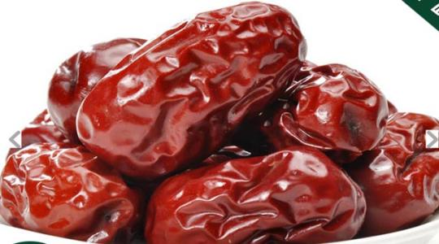
陕北红枣
陕北大红枣是驰名中外的陕西传统名优特产之一。
-
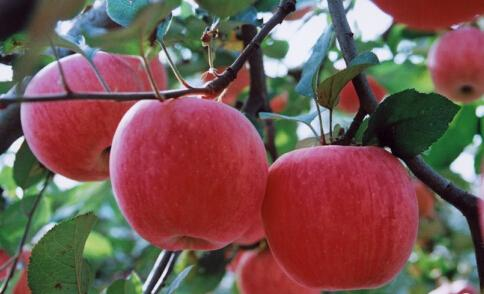
白水苹果
众所周知，白水县是国内外专家公认的苹果最佳优生区之一，素有“中国苹果之乡”的美誉，其“白水”苹果也被确定为陕西省知名品牌。
-
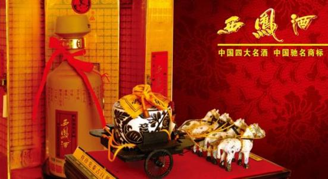
凤翔西凤酒
西凤酒是我国“八大名酒”之一，，唯以凤翔城西柳镇所生产的酒为最佳，声誉最高。
-
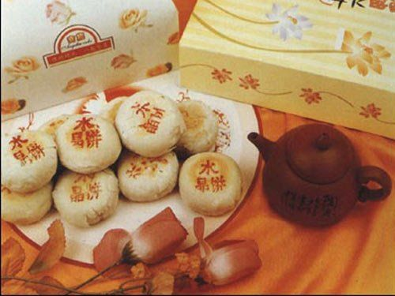
水晶饼
水晶饼因其馅芯透明发亮，犹如水晶而得名。
-
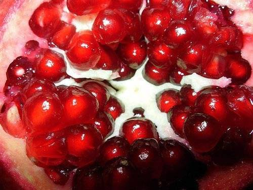
临潼石榴
临潼石榴具有悠久的历史，引进初期，先在京都长安(今西安)御花园的“上林苑”和骊山的温泉宫(今华清池)内种植，是供皇子后妃观赏的。
-

凤翔腊驴肉
驴肉具有补气血，益脏腑等功能，对于积年劳损、久病初愈、气血亏虚、短气乏力、食欲不振者皆为补益食疗佳品。
-

歧山挂面
选用优质小麦特粉，经过揉条，搓条，上棍等十道工序精制而成。
-
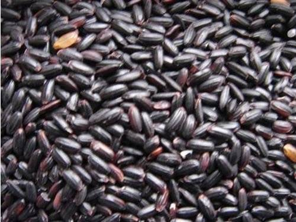
洋县黑米
洋县种植黑稻米，距今已有2000多年历史。
-
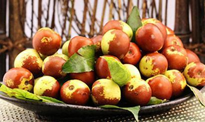
大荔冬枣
享有“南荔枝，北冬枣，百果王”的盛名。平均单果重17.5g，最大单果重可达25g
-
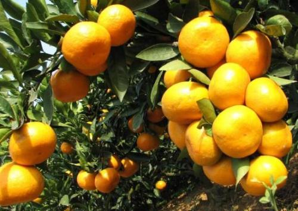
城固柑橘
城固柑橘历史悠久，2000年前就有“蜀汉江铃千树”的记载。但是，以前由于缺乏统一商标，降低了城固柑橘的市场竞争力。
-
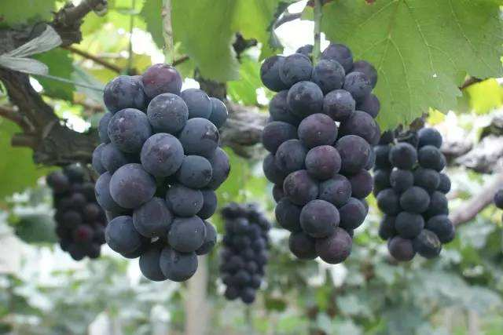
户太八号葡萄
西安那片森林农业合作社在户县政府的扶持下建立了3000余亩葡萄种植基地，现已取得初步成效。
-
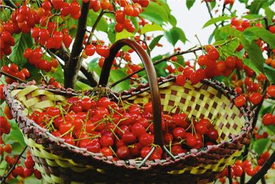
灞桥樱桃
灞桥樱桃颗粒饱满，果型硕大，果实呈肾形或宽心脏形，色泽艳丽有光泽，多数品种为鲜红色或紫红色
-
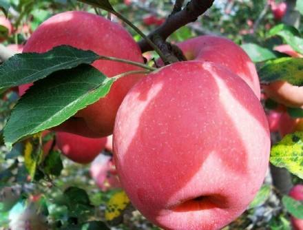
长武苹果
长武苹果作为陕西的名优水果，其营养丰富，价值较高，在当地人们称“糖果”。
-
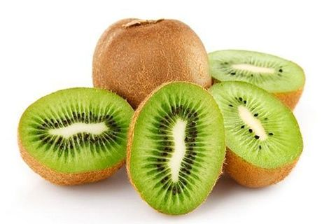
周至猕猴桃
周至猕猴桃是产于陕西周至的猕猴桃，周至猕猴桃的质地柔软，味道有时被描述为草莓、香蕉、凤梨三者的混合。
-
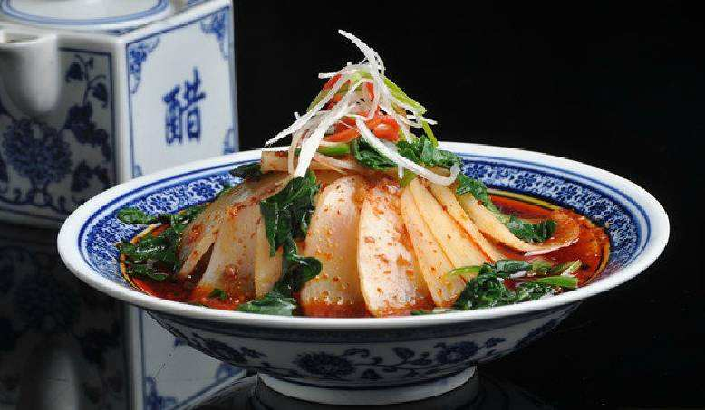
彬县御面
彬县御面是陕西省咸阳市彬县著名的传统小吃。